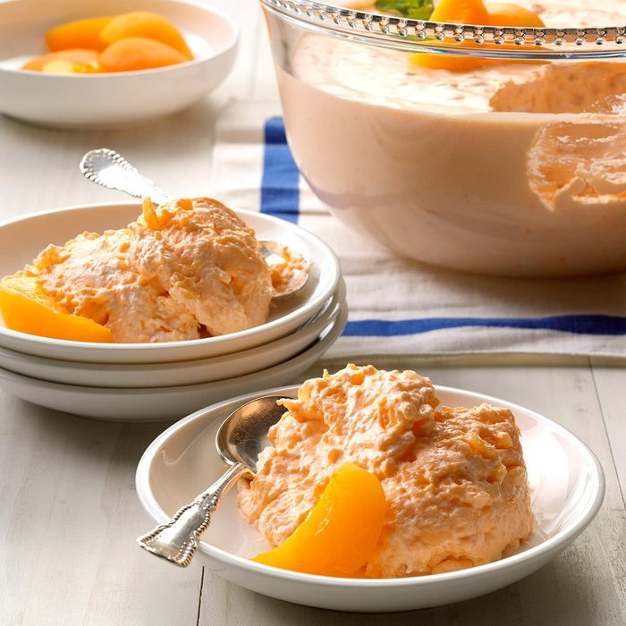

Apricot Salad
Back to Index

Description
Colorful gelatin salad adds a spot of brightness to any table. It blends well with this holiday feast. We children didn't know if it should be a salad or dessert, with its smooth texture and delicate flavor.
Ingredients
- 2 packages apricot gelatin
- 2 cups boiling water
- 1 package cream cheese
- 1 cup whole milk
- 1 can crushed pineapple
- 1 3/4 cups frozen whipped topping
- 1 can apricots
- fresh mint leaves
Directions
Step 1
- Dissolve gelatin in boiling water; set aside. Beat cream cheese until smooth; gradually beat in milk until smooth. Stir in gelatin. Add pineapple, mixing well. Refrigerate.
Step 2
- When mixture begins to thicken, fold in whipped topping. Pour into a 2-1/2-qt. serving bowl. Refrigerate at least 2 hours. If desired, serve with canned apricots and fresh mint leaves.
Nutrition
Calories
235
Fat
11g
Carbs
31g
Protein
4g
Back to Index